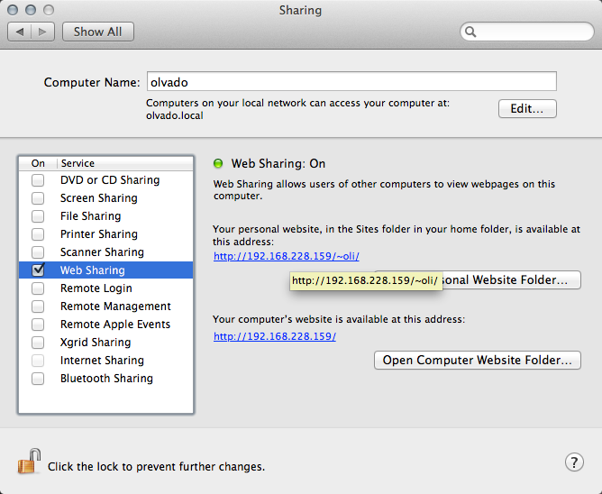

Teaching designers how to code
Because Photoshop is grim as balls
Created by @ninjabiscuit
What's it all about?
Getting up and running with the tools, techniques and open source projects that'll help you start prototyping layouts and designs in the browser
What's it not about?
Best practices, everyday terminal use, in depth coding techniques
Newsflash
You don't have to be the best developer, or even a good developer to make something useful or meaningful
Lets get started
You'll need an editor
You'll also need a webserver
If you're using a Mac you already have one - you just need to enable it
Setting up web sharing on OSX Lion 10.7 and 10.6
(you'll only need to do this once) Mountain Lion is a bit trickier
- To open the OS X Terminal utility type (cmd+space) terminal (enter)
- Create and edit an Apache user config file named after your user account by typing:
-
Copy the following text into the Terminal editor that opens, but be sure to change the "username" text to the short name of your user account:
<Directory "/Users/username/Sites/"> Options Indexes MultiViews AllowOverride All Order allow,deny Allow from all </Directory> - Save and close the editor by pressing Control-O followed by Control-X.
sudo pico /etc/apache2/users/`whoami`.confCredit: Topher Kessler
Mountain Lion continued
To enable the server even after subsequent reboots, type the following command:
sudo defaults write /System/Library/LaunchDaemons/org.apache.httpd Disabled -bool falseHopefully you won't have to screw with any of this again
You should now be able to access your webserver at localhost (change "andrewwalker" to the short name of your user account)
http://localhost/~andrewwalkerLets create a new project
You should have a folder called Sites in your home directory - if not, create one now
All your future projects will live in the Sites directory
Create a new project
Create a new folder in Sites called design1
Open the project in Sublime Text 2
File > OpenSelect the design1 folder
Before we start coding, lets talk open source
There are a wealth of projects on github and elsewhere that have been created to help developers get up and running quickly
HTML5 Boilerplate
HTML5BP enables you to set up the bare bones of a web page with ease: HTML5 Boilerplate
It includes
- A basic html5 template with correct doctype, body, head, jquery and some other goodies
- Normalize.css - an HTML5-ready alternative to CSS resets
- Some basic styles and helper classes (main.css)
- Lots of other good stuff
Grids
Grid frameworks set up some basic CSS classes to make it easier to layout sites.
Some are responsive, others aren't - if you're working to a grid use whatever works for you.
Some grid frameworks
Placeholder Services
If you're wireframing or designing without final imagery, you may want to use an image placeholder service like placehold.it
Back to our project
Lets download and include HTML5 Boilerplate and Flyn
- Copy the contents of the HTML5BP into your project folder
- Create a new file in the css directory called flyn.css and copy the code from the link above into that file
-
The flynn stylesheet can be added to index.html between normalize and main on line 16
<link rel="stylesheet" href="css/normalize.css"> <link rel="stylesheet" href="css/flynn.css"> <link rel="stylesheet" href="css/main.css">
Github
If you want to collaborate with other designers and developers you need to get up and running with Github. But it's easier than you think!
Github
There's an app for that! http://mac.github.com/
Mother F**king coding - How does it work?
Amazon Web Services and Simple Storage Service
You can get started with Amazon S3 for free.